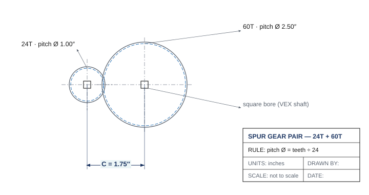

▶ At the bench: Mechanisms in Motion
Building the Activity 2.1 mechanisms? Open Mechanisms in Motion — real VEX build photos, animations, and a video of each one working (leadscrew, universal joint, belt drive, crank & slider, cam & follower), with the questions to answer for each.
Watch first: slow down to power up
A short video of the big ideas: the four types of motion, meshed gears, how to read a gear ratio, and the torque-for-speed trade on your EXP motor.
Machines change motion
A mechanism is a device that transmits movement so that the output movement is different from the input movement. It can change the direction of motion, its speed, its force or torque, or even its type. Look at a drill press: the spinning bit is rotary motion, but the handle that feeds the bit down through the wood produces linear motion — two kinds of motion in one machine, each created by a mechanism. And the drill's speed matters: spin the bit too fast and it burns the wood and dulls the bit, so the drill press uses pulleys or gears to set the right speed. Every machine you'll observe this week — and every robot you'll build this semester — is a chain of mechanisms doing exactly these jobs.
The four types of motion
- Rotary — around in a circle: a wheel, a motor shaft, a doorknob.
- Linear — straight in one direction: a train on a track, a drawer sliding out (in practice "linear" includes straight-line travel you can reverse).
- Reciprocating — back and forth in a straight line: a saw blade, a piston, a sewing-machine needle.
- Oscillating — back and forth in an arc: a swing, a clock pendulum, windshield wipers.
Mechanisms convert one type into another. A rack and pinion (a round gear on a flat, toothed bar — it's how a car's steering works) turns rotary into linear. A cam turns rotary into reciprocating — that's how an engine's spinning camshaft makes valves pump up and down. A crank and slider works the trick in reverse: the reciprocating pistons in a car engine drive a rotating crankshaft. When you observe a machine this week, your job is to name the input motion, the mechanism, and the output motion.
The six simple machines
Mechanisms are built from an old, short alphabet — the six simple machines: the lever (seesaw, crowbar, your wrench), the wheel and axle (doorknob, steering wheel), the pulley (flagpole, blinds), the inclined plane (ramp), the wedge (knife, axe), and the screw (an inclined plane wrapped around a shaft — every #8-32 fastener in your kit). Scissors are two levers sharing a pivot plus two wedges; an eggbeater is a wheel-and-axle driving gears. Spotting the simple machines inside a mechanism is how engineers see what a machine is really doing.
Gear trains: rotary motion, transmitted
The mechanism you'll use most this semester is the gear train: two or more gears meshed so their teeth interlock. Because the teeth physically lock together, gears transmit rotary motion and torque without slipping — and two facts follow immediately:
- Meshed gears always turn in opposite directions. If the first spins clockwise, the second must spin counterclockwise — picture the teeth at the meshing point moving together.
- The gear the motor (or crank) turns is the drive gear — the input. The gear it pushes is the driven gear — the output. Everything about a gear train starts with telling these two apart.
The gear ratio: one number that tells you everything
The gear ratio compares the driven gear to the drive gear. You don't need diameters or rulers — count teeth:
gear ratio = teeth on driven gear : teeth on drive gear
So a 24-tooth gear driving a 60-tooth gear is 60:24, which simplifies to 2.5:1. Read that out loud the way engineers do: "the drive gear turns two and a half times for every one turn of the driven gear." A 5:1 ratio means five turns in for one turn out. That's the whole trick — the ratio is just turns in per turn out.
Why does the big gear turn slower? Because the teeth can't slip. At the meshing point, teeth go by at the same rate on both gears — every tooth of the 24 that passes pushes exactly one tooth of the 60. But the 60-tooth gear needs 60 tooth-passes for a full revolution while the small one needs only 24, so the small gear must spin 2.5 revolutions to take the big one around once. Slower output is built into the geometry.
🔢 Read any gear train in three steps
1. Find the drive gear. It's the one the motor or crank turns — follow the power in. (This is the step most people skip, and it's where most wrong answers come from.)
2. Count teeth on the drive gear and on the driven gear.
3. Write driven : drive and simplify. If the number is bigger than 1 (like 2.5:1), the output is slower and stronger. If it's less than 1 (like 1:2.5), the output is faster and weaker. If it's 1:1, speed and torque pass straight through — only the direction flips.
📐 See it in CAD — the same gears, as a technical drawing
Engineers don't just sketch a gear — they draw it with dimensions so anyone can build or mount it exactly. Here are the same 24T and 60T gears, drawn the way an engineer would. Notice the gear isn't drawn tooth-by-tooth: the dashed blue circle is the pitch circle (where the teeth effectively grip), and that's the circle that matters for meshing.

Why this is useful: because pitch Ø = teeth ÷ 24 for VEX gears, the center distance — how far apart to mount the two shafts — is just the average of the two pitch radii: (0.50″ + 1.25″) = 1.75″. The drawing tells a builder exactly where to drill, before a single part is touched.
This course uses Onshape (free for schools) for 3D CAD and drawings like this. You'll see VEX parts and assemblies in CAD throughout the book — you don't have to make them to finish a chapter, but they're worth a look. Browse real parts in the VEX CAD library.
The trade: torque ⇄ speed
Two words first. A force is a push or pull in a straight line. Torque is a push or pull in a circle — turning force. Motors make torque; wheels and arms spend it.
Here is the law that runs this whole unit: in a gear train, torque and speed trade off, one for the other. Gear for 2.5× the torque and you get the output at 2.5× slower. Gear for 2.5× the speed and the output is 2.5× weaker. You never get both — a gear train doesn't add power, it only re-shapes the power the motor gives it (and friction skims a little off the top).
Why does the big driven gear pull harder? Think of a wrench: the longer the handle, the more turning force the same push produces. A gear tooth is a tiny handle. On a 60-tooth gear the teeth sit far from the center — a long handle — so the same tooth-on-tooth push creates more torque at the shaft than it would on a small gear, where the teeth sit close to the center.
You already use this trade. Riding a bike up a steep hill, you shift to a low gear: your legs spin faster and the wheel turns more slowly, but each pedal stroke turns the wheel with far more torque — the same effort now climbs the hill. On flat ground you shift the other way, trading torque you don't need for speed you do. Cars downshift on hills for exactly the same reason. Engineers say it in four short rules:
⚖️ The four gear rules
- As torque goes up, speed goes down — and vice versa. Always.
- To get more speed: a bigger drive gear or a smaller driven gear.
- To get more torque: a smaller drive gear or a bigger driven gear.
- Memory hook: slow down to power up.
Try it: the gear-ratio lab
Pick a drive gear (on the motor) and a driven gear (on the arm). The motor always spins at 200 RPM. Watch how fast the driven gear turns, then raise the arm's load and see whether the gearing gives it enough torque to lift — or whether the motor stalls.
How this shows up on your EXP robot
Now make it concrete, because on EXP this isn't optional knowledge. Your kit's Smart Motor (5.5W) spins at a fixed 200 RPM (revolutions per minute) and produces up to 0.5 N·m of torque — and unlike the V5 competition motors, it has no swappable gear cartridges. The motor's output is the motor's output. The gears you bolt on are the only dial you have, and your kit gives you four High Strength spur gears to turn it with: 24, 36, 48, and 60 teeth.
What the kit's pairings actually do to that 200 RPM:
| Drive gear | Driven gear | Ratio (driven:drive) | Output speed | Output torque | Use it for |
|---|---|---|---|---|---|
| motor direct | — | — | 200 RPM | 1× (0.5 N·m) | light, fast drivetrains |
| 48T | 48T | 1:1 | 200 RPM | 1× | moving power over, reversing direction |
| 36T | 60T | 5:3 ≈ 1.7:1 | 120 RPM | ≈1.7× | a heavier drivetrain that won't stall |
| 24T | 48T | 2:1 | 100 RPM | 2× | pushing matches, slow + strong drive |
| 24T | 60T | 2.5:1 | 80 RPM | 2.5× (≈1.25 N·m) | arms and lifts — the classic choice |
| 60T | 24T | 1:2.5 | 500 RPM | 0.4× | spinners; almost never a drivetrain |
Torque multipliers are ideal values — friction in every mesh and bearing takes a small cut.
Two situations you will personally meet:
- The arm that won't lift. You build an arm, plug the motor straight into its shaft, and it whines, shudders, and quits — the motor is stalling: the load needs more torque than 0.5 N·m. (The Smart Motor protects itself by limiting current and watching its temperature, so it gives up rather than burns up.) The fix is not a bigger motor — it's a gear reduction: put the 24T on the motor, the 60T on the arm shaft, and the arm now lifts with 2.5× the torque. It moves slower. For an arm, slower is fine — that's the trade working for you.
- The "fast robot" trap. Gearing the drivetrain 1:2.5 for 500 RPM sounds amazing until the robot can barely push itself, stalls climbing onto a ramp, and is too twitchy to steer. Speed you can't control or sustain isn't speed — most successful classroom bots drive between 1:1 and 2:1.
💻 Code it — spin the gears
You've seen what gears do to the motor's fixed 200 RPM. Now drive them yourself. Open the starter project, and in the marked region type:
leftMotor.setVelocity(50, percent); leftMotor.spin(forward); wait(3, seconds); leftMotor.stop();
Now try: change 50 to 25, then 100, and Download & Run each time. The motor obeys the number you give it — but the gear ratio is what decides how fast the driven gear actually turns, and how much force it has. Code sets the input; the gears transform it. (Bolt up a 24T → 60T pair from the table and watch the output crawl — with about 2.5× the push.)
🏆 Also on the V5 competition team?
The V5 system's motor swaps internal gear cartridges (100 / 200 / 600 RPM), so a V5 builder changes a cartridge where you change external gears — your EXP motor is fixed at 200 RPM. Building from the EXP kit is one of this course's two build constraints (the other: every build has to fit a storage cubby — Chapter 4 lays both out). The classroom keeps V5 parts for competition; the constraint keeps that stock complete. Explore the differences in the V5 VEX Library.
📚 Learn more — VEX Library
- Using Gear Ratios with the V5 Motor — 3D builds of 1:1, 5:1, and 7:1 gear trains for drivetrains and arms. Heads-up: it's the V5/competition page (12T and 84T gears, swappable cartridges — see the note above); your EXP motor is fixed at 200 RPM, so you pick external gears instead.
- Understanding V5 Smart Motor (5.5W) Performance — the data sheet for your motor: 200 RPM, 0.5 N·m, and how it protects itself from stalls and overheating.
- Engineering 101: Gears and Mechanical Advantage — 📺 a VEX video demo of gearing up vs. gearing down with real gears in hand.
One ratio, two dialects. This course (and PLTW) writes ratios driven:drive, so 2.5:1 means slower-and-stronger. Some competition builders say the same gearing as "1:2.5" because they put the input first, or call it a "2.5:1 reduction." Nobody is wrong — but whenever you see a ratio, ask which gear is driven before you trust it. Saying "60:24, geared for torque" is never ambiguous.
Reading mechanisms in the wild
You now have the full observation method, the same one engineers use on an unfamiliar machine — and the same one a Rube Goldberg cartoon turns into comedy by chaining twenty mechanisms to do one silly job:
- Find the input. Where does motion or force enter — a hand, a motor, a falling weight?
- Trace it through each mechanism. At every stage, ask: did the direction, speed, torque, or type of motion change? Which simple machines do you see?
- Name the output — the motion that finally does the job.
Scissors: reciprocating squeeze in → two levers pivot → wedges shear paper. Eggbeater: rotary crank in → gear train speeds it up (a big drive gear turning small driven gears — trading torque for speed, since whipping eggs needs speed, not muscle) → fast rotary out. Can opener, pencil sharpener, bicycle: every one tells the same kind of story, and this week you'll write those stories in your notebook.
Build tutorial: measure a gear ratio yourself
Don't just calculate the ratio — prove it with real gears. You'll build one gear pair, count turns, feel the trade, then swap gears and fill in your table.
Goal: two shafts that spin freely
Mount the gears
On a flat bar or C-channel, put a bearing flat behind each shaft hole. Slide a shaft through each, add the gears (24T and 60T), and lock each shaft with a collar so it can't slide. Space the holes so the teeth mesh snugly — not jammed, not loose.
✅ Check it: turn one gear by hand. Both spin smoothly, in opposite directions, with no skipping or grinding.
🔧 If not: grinding or stiff? The shafts are too close or a collar is pinching the bearing — loosen it a hair. Teeth skip? The gears are too far apart.
Goal: verify the ratio with your eyes
Mark and count turns
Put a small piece of tape on one tooth of each gear. Slowly turn the 24T (drive) and count how many full turns it takes to bring the 60T (driven) once all the way around.
✅ Check it: you should count about 2½ turns — matching 60 : 24 = 2.5 : 1.
Goal: feel torque vs. speed
Feel the trade
Have your partner gently pinch the 60T shaft while you turn the 24T — it's easy for you to win. Now swap: turn the 60T while they pinch the 24T. The small gear spins fast but gives up easily.
✅ Record it: one sentence each — "Driving the small gear felt…" and "Driving the big gear felt…".
Goal: let the motor drive it
Motor on the drive gear
Put the 24T on a Smart Motor's shaft and run the "Code it" program below. Time 3 seconds and count driven-gear turns.
✅ Check it: at 100% the motor turns 200 RPM, so in 3 seconds the 24T makes 10 turns and the 60T about 4 (10 ÷ 2.5).
Goal: every pairing, measured
Swap gears and fill the table
| Drive | Driven | Ratio | Predicted turns in 3 s | Counted | Faster or stronger? |
|---|---|---|---|---|---|
| 24T | 60T | 2.5:1 | 4 | __ | __ |
| 24T | 48T | 2:1 | 5 | __ | __ |
| 48T | 48T | 1:1 | 10 | __ | __ |
| 60T | 24T | 1:2.5 | 25 | __ | __ |
🔧 Can't count 25 turns? That's the point — fast gearing is hard to control. Time 1 second instead.
Goal: use the trade on purpose
Lift a load
Bolt a short arm to the driven shaft and hang a light load (a few nuts in a cup). Try 1:1, then 2.5:1. Which one lifts it without the motor straining?
✅ Check it: the 2.5:1 gearing lifts the load slower but without the whine of a stall. Slow down to power up.
What you'll need
- VEX EXP parts: 24T/36T/48T/60T gears, shafts, bearing flats, shaft collars, C-channels or flat bars to mount on
- Everyday objects with mechanisms (scissors, eggbeater, can opener, bicycle)
- Engineering notebook
Do it
- See the four motions. Your teacher demonstrates rotary, linear, reciprocating, and oscillating motion with a simple example of each — copy the four into your notebook with one example of your own per type.
- Observation stations. At each station, record the input motion → mechanism → output motion, and note any change in direction, speed, or torque.
- Build and feel the trade. Mount a 24T gear meshed with a 60T gear on a flat bar (bearing flats behind each shaft, collars to hold them). Turn the 24T by hand while your partner gently resists the 60T shaft — feel how strong the slow shaft is. Now drive the 60T instead and feel the 24T side spin fast but give up easily. Write one sentence in your notebook about what you felt.
- Complete the gear-ratio practice table on your worksheet — drive gear, driven gear, ratio, and what happens to speed and torque.
- Class discussion: which simple machines appeared at each station, and where did motion change type?
Check your understanding
- Give an example of a mechanism that converts rotary motion into linear motion.
- Why do engineers care about the type of motion a mechanism produces?
- A 24-tooth gear on the motor drives a 60-tooth gear on a wheel. What is the gear ratio, what is the output speed if the motor spins 200 RPM, and which shaft has more torque?
- Fill in the blanks: As the torque of a gear train increases, the speed _______. To increase torque, you should _______ the size of the drive gear or _______ the size of the driven gear.
- Pedaling a bike up a steep hill, you shift to a low gear. Which way are you trading speed and torque, and why does it help?
- Your robot's arm motor whines and quits when lifting a full water bottle. Using this chapter — and without a bigger motor — what's the fix, and what will you give up?
- In the gear-ratio lab, which pairing let the arm lift the heaviest load? Which pairing spun fastest? Explain why it can't be the same pairing.
Key terms
Sources (VEX Library, kb.vex.com / pd.vex.com): Using Gear Ratios with the V5 Motor; Understanding V5 Smart Motor (5.5W) Performance; Engineering 101: Gears and Mechanical Advantage (video); Building with VEX EXP. Kit gear and motor counts per the PLTW Gateway VEX EXP custom kit (270-8867) bill of materials. The gear-ratio lab animation, narrated walkthrough video, and step-by-step build tutorial are added scaffolding for this edition; the lab's torque values are ideal (with a small friction allowance), using the Smart Motor's 200 RPM and 0.5 N·m.